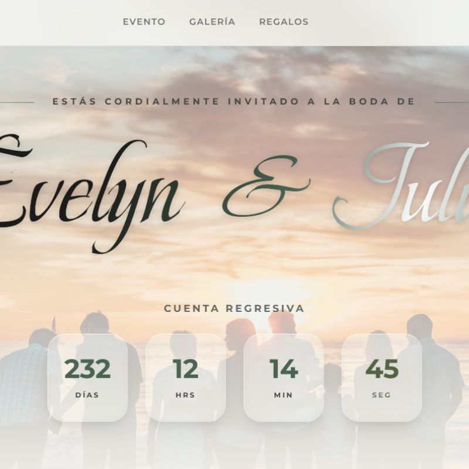

01
Botánico · Floral
Invitación Bosque del Sur
Inspirada en la majestuosidad de la naturaleza sureña. Tonos verde pino y fondos crema combinados con una tipografía cursiva clásica y fluida.
Ver proyecto →